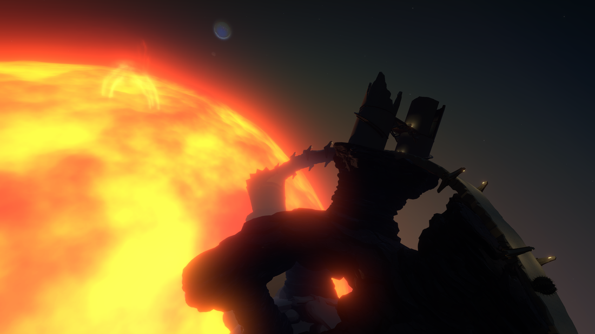
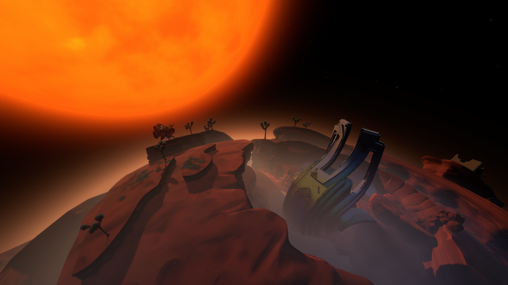
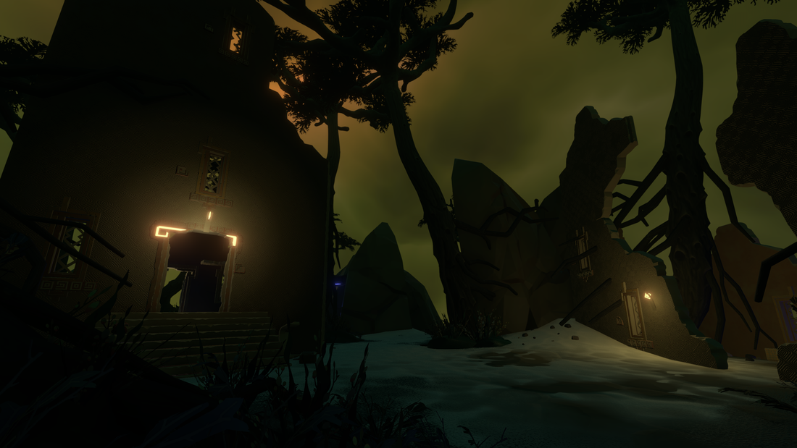
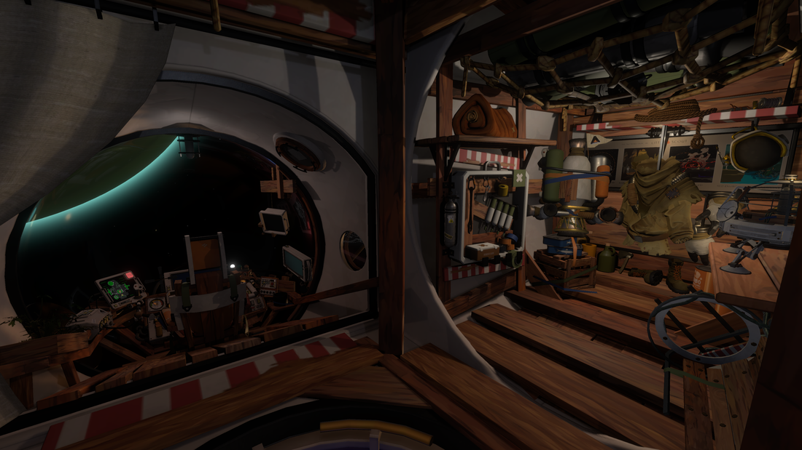
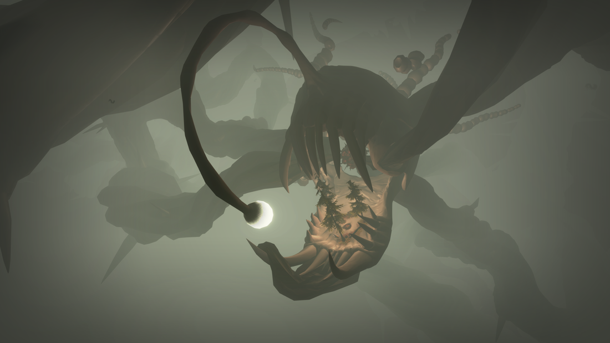
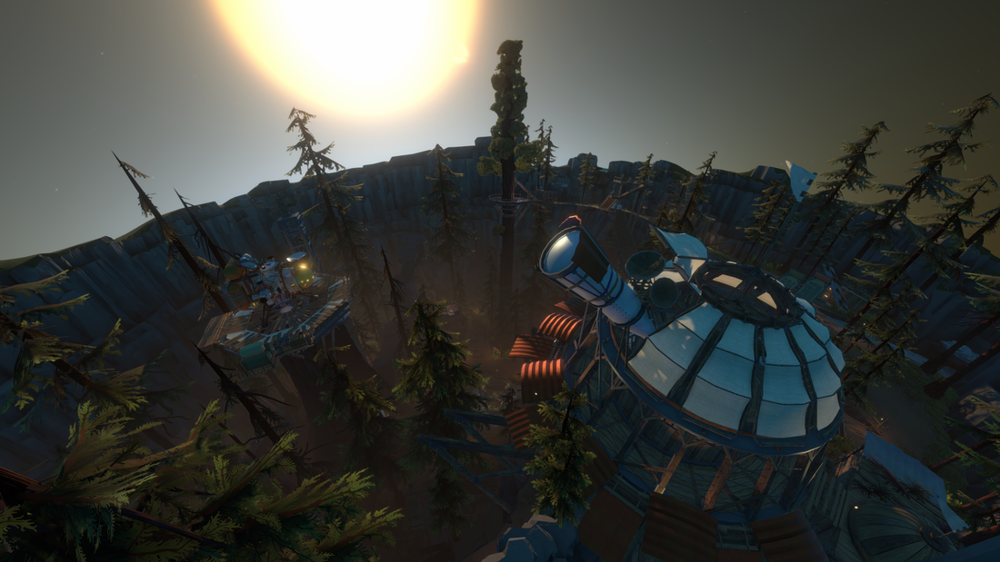

Outer Wilds is a 2019 action-adventure game developed by Mobius Digital and published by Annapurna Interactive. Over time, it has become my favorite story game of all time, where the less you know, the better.
A hollowed out planet facing the sun.
A mars-like planet with a alien structure.
A mysterious ruin below a cloudy sky.
The interior of a cozy ship.
A massive anglerfish skeleton with a campsite inside of its mouth.
A village with a ship dock and observatory as the sun sets.